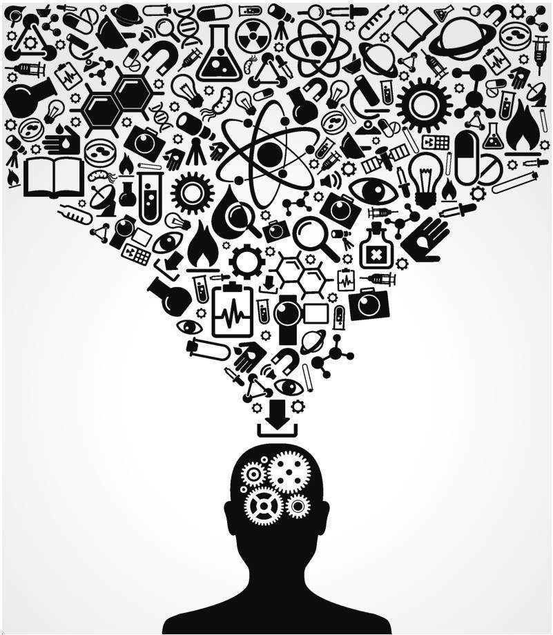
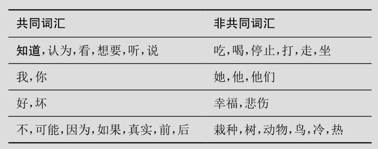

第一章
引言
知识的寻求
获取知识现在可以说是再简单不过的事情，即便是很难的问题也只需要敲几下键盘就能获得答案。我们个人的记忆、知觉与推理能力可以毫不费力地由很久之前的朋友或专家来检验。如果过往的几代人依然在世，他们也一定会为我们所能获取的书籍数量之巨大而无比惊讶。
然而，这些新的优势并不能使我们避开一个古老的问题：如果知识如此容易获得，那么单纯的意见也是，而我们很难分辨哪些是真正的知识，哪些只不过是一些意见。譬如，看起来值得信任的网站也许并不客观公正，享誉世界的权威也可能受某些证据的误导而走向错误的方向，幻觉还会扭曲我们自认为看到或记得的事情。因此，那些初看起来像是知识的东西，也有可能最后被证明并非真的知识。考虑到这项探究的困难，我们不免怀疑真正的知识究竟是什么样的。知识究竟是什么？在认为某物为真与真正知道它为真之间，究竟有什么差异？我们究竟如何能获得知识？
这些问题都非常古老，而且有一个专门的哲学分支来回答它们——知识论（epistemology），几千年来一直是较为活跃的哲学主题。某些核心的问题历经千年的思考仍然亘古常新：知识与真理的关系是什么？视觉和听觉这样的感觉提供知识的方式是否与抽象推理提供知识的方式相同？为了确定知道某件事情，是否需要具备证成该项主张的能力？有的研究课题则是近来才涌现的，主要是根据某些人性、语言和心灵上的新发现。譬如，知识与意见的对立是否存在于所有文化之中？一般而言，“知道”这个词总是指称相同的对象吗？还是说它在法庭辩论中指称意义重大的事实，而在公交车站的随意交谈中指代无足轻重的东西？从自然的直觉上看，我们对于他人所知的东西究竟拥有怎样的印象？这些印象又告诉了我们多少关于知识本身的东西？
几个世纪以来，哲学家们在对知识的探究中发掘出了许多费解的谜题与悖论。他们同时也创造性地发展出了这些问题的解决方案。本书将首先回顾知识论历史上的这些重要进展，而后就将引向这一领域在当代的核心论争。以下我们先从回顾知识的一些特征开始，这很容易激发哲学上的好奇心。
知识与认知者
知识常被勾画为某种自由流动的客观资源：知识被认为储存在数据库与图书馆里，通过“知识经济”——有时也被称为“信息驱动的商业”——发生交换。如许多资源一样，知识可以是为了多重目的而被获取与应用，也可能会丢失——有时要付出很高的代价。但是，知识与我们之间的关系要远远比水或黄金那样的资源与我们的关系更为密切。即使人类的感性生活在某一灾难中被完全抹杀，黄金仍然可以继续存在。然而，知识是否能持续存在下去，却不能不依赖于认知者的存在。
知识还很容易被等同于事实，但并非所有事实都是知识。设想一下，晃动一只装有一枚硬币的密封纸箱，当你放下纸箱，其中硬币的两面之中必有一面朝上：我们把这称作一个事实。但只要还没有人打开过纸箱，这个事实就仍不为人所知；它就还不是一项知识。此外，仅仅通过写下来，事实也不会由此变为知识。假设你在一张纸上写下：“这枚硬币正面朝上”，而在另一张纸上写“这枚硬币背面朝上”，那么这两张纸上所写的总有一个是事实，但你仍然不会知道究竟硬币的哪一面是朝上的。所以，知识所要求的乃从主体的一方通达事实的某种方式。只要不考虑如何通达事实，则不论图书馆或数据库里保存的是什么，它们都不会是知识，而只不过是一些墨水符号或电子印记。就任何已知的知识而言，对事实的通达有可能专属或不专属于个人：同一个事实或许只是由某个人所知道，而并不为他人所知。普通的知识或许能够被多人分享，但绝没有任何知识空荡荡地摇晃而不从属于任何主体。与水或黄金不同的是，知识永远从属于认知者。
更确切地说，知识总是从属于某些个体或群体：群体的知识或许会超越其中个体成员的知识。有时一个群体知道某个事实，只是因为该群体的所有成员都知道了这个事实（“乐队知道音乐会晚上八点钟开始”）。但有时我们也会说，乐队知道如何演奏贝多芬的《第九交响曲》全篇，即便其中的个体成员仅仅知道他们自己所负责演奏的部分。又或者说，某个流氓国家知道如何发射搭载核弹头的导弹，即便这个国家中没有任何一个人知道控制这一发射所需要的哪怕一半信息。群体可以以极具创造性（或破坏性）的方式组合其成员的知识。

图1 所知物必须关联到认知者
那么，是否存在超越人类个体与群体的知识？我们是否有必要讨论非人类的动物的知识？或者，假如有上帝的话，还有上帝的知识？这些问题极有可能把我们推向生物学和神学上的艰难论争。出于这个原因，大多数知识论学者都从简单的范例出发，即某个个人（譬如你自己）的知识。这种知识将会是本书关注的焦点。这里所关心的意义上的知识，即个人与事实之间的关联。即便我们把关注点限制到某一个认知者与某一个所知的事实上，描述这种关联仍然非常有挑战性。对你来说，知道某件事情，而非仅仅相信它，是什么意思？
发现差异
如果要寻求真正的知识与一般的信念之间的差异，首先需要考虑的是，我们如何能确信这里真的有某种差异。考虑一下这样的观点：知识与意见之间没什么真正的区别。倘若“知识”不过是我们贴在精英态度上的标签呢？在我们的文化中，或许诺贝尔奖得主的科学研究就是这种意义上的知识，或是某个首席执行官对他的企业的思考也是知识；而在历史上的其他时代或世界上其他地域，大祭司的教义或部落长者的意见也可以是这种意义上的知识。与此相一致的是，弱者或处于劣势的人们持有的观点却被看作迷信或误解。按照这种犬儒主义的理论，某个观点究竟是知识还是仅仅作为意见，取决于持有观点的人究竟是领袖精英还是竞争的失败者，而无关乎这一观点本身及其与实在的关系。
把知识看作地位的标签，也并非全无道理。“知识”肯定是一个有吸引力的标签，说某种态度是知识，就意味着它高于许多其他态度。而且，知识与权力之间也的确存在着很强的双向关联：权力通常会使人具备一些优势，有助于获取知识；而知识也能帮助人们攫取权力。我们对知识的判断甚至也常常会受到某些偏见的影响，这些偏见通常也正是来自所评价对象的社会地位。但犬儒主义理论所主张的要远远超过这些，即权力与知识总是携手并进，或者说人们通常认为两者密不可分——犬儒主义主张知识只不过是对权力的感知，除此之外，别无他物。
犬儒主义理论试图解释“知识”一词的实际使用，但它没有把握住某些相关事实。首先，它低估了人们对抗有权者观点的能力：即便是诺贝尔奖得主的观点也不能免于怀疑和挑战。或者更一般地说，即便我们很有可能会视有权者为有知者，我们也依然会在真正的知识与仅仅看似有知识之间识别出区分的界限。其实有很多这样的例子，其中曾经被认为是有知识的专家，结果却被证明是错了。其次，它也没有抓住我们在日常生活中谈论知识的方式。“知道”这个动词并不只是顶尖的专家或领袖人物才能用得上，它在英语中是十个最常用的动词之一。通常我们描述看到的、听到的和回忆起来的事情，都是默认用这个动词。例如，你知道昨天晚上吃了什么，也知道谁赢得了最近一次的美国总统大选，更知道你现在是不是穿着鞋子。
在这方面，英语并不是特例。在诸如俄语、汉语、威尔士语和西班牙语等许多语言中，“知道”这个词都是最常用的动词之一。而英语与很多其他语言一样，还有一个容易引起误解的特征：在英语中，“know”这个词有两个不同的含义。一方面，它后面可以跟命题内容或“that”从句（例如，“他知道［that］那辆车失窃了”），或是某个嵌入的问题（例如，“她知道谁偷了那辆车”，或“她知道偷窃行为是什么时候发生的”）。另一方面，“know”后面也可以是直接宾语（“他认识巴拉克·奥巴马”；“她知道伦敦”）。有的语言则以不同的词表达这两个含义，例如法语中的“savoir”和“connaître”。下面，我们主要集中于考察“知道”的第一个含义，也就是那种把人与事实联系起来的知识。
有意思的是，这种意义上的“知道”在世界上所有的6000多种人类语言中都有对应的词（“认为”也有着相同的地位）。这其实是非常罕见的。一个受过良好教育的人大概能掌握20000个单词，但其中大概只有不到100个能够在所有其他语言中有准确的翻译。有些非常常用的词汇，譬如“吃”和“喝”，你或许认为在所有语言中都找得到，但其实并不总是能找到意义相同的对应词。（某些澳大利亚和巴布亚新几内亚的土著语言就不区分“吃”与“喝”，它们只有同一个词，意思是“咽下”。）有时却又反过来，其他语言做出的是更细致而非更粗略的区分。例如，很多语言中并没有单一的词汇对译“走”，因为它们用不同的动词分别指称行走这样的自主行动与借助交通工具的移动。而在有些情况下，区分的边界却又划在不同的地方：例如，英语中普遍用代词“他”和“她”来区分性别，而在其他语言中，第三人称代词区分在场与不在场的人，而不在性别上做区分。人类的语言是极其丰富多样的。尽管如此，某一些词汇仍然出现在所有已知的语言之中，或许是因为它们的含义对语言的作用来说非常关键，又或许是因为它们表达了人类经验中某些关键的方面。这些共同的词汇就包括“因为”“如果”“好”“坏”“生”“死”等等，以及“知道”。（见方框1）
方框1 在所有语言中共同与非共同的词汇

知道与认为
那么，对于如此重要的动词，我们通常又是怎样使用的呢？“知道”究竟如何区别于“认为”？语词的日常使用会提供某些线索。考虑下面这两个句子：
吉尔知道她锁上了门。
比尔认为他锁上了门。
我们立刻就能注意到，在吉尔与比尔之间有某种区别。那么这里的差异究竟是什么呢？我们所能想到的一个因素是与“锁门”那个内嵌命题的真值有关。如果比尔只是认为门锁上了，也许是因为门并未真正上锁，譬如说他在早晨离开家的时候没有让钥匙在锁孔里多转一圈。但吉尔的门却必须是锁上了的，因为她所说的那个命题必须为真：通常当我们说“吉尔知道她锁上了门”时，我们一般不能接着说“但她的门没上锁”。正是知识把主体与真值联系起来。“知道”的这个特征被称为事实性（factivity）：我们所能够真正知道的只有事实或真命题。“知道”并不是唯一有事实性的语词用法，类似的还有“意识到”、“看到”、“想起来”以及“证明出来”等。例如，只有当你真的中了彩票的时候，你才可能意识到你中了彩票。因此，“知道”的特殊性之一，正在于它体现了这一类动词的共性，代表了像“想起来”“意识到”等动词共同具有的深层状态。显而易见，看到谷仓起火或是证明出不存在最大的质数，都不过是两种获得知识的具体途径。
当然，有可能我们只是好像知道某些事情，而后却被证伪了——但只要我们认识到其中的命题为假，我们就不会再主张自己先前知道。（“我们原以为他知道，但最后证明他其实是错了，根本不知道。”）更为复杂的是，我们似乎很难区分真正拥有知识与只是看似知道的情形，但这并不意味着能够抹杀两者之间的区别。在一个充斥着假货的市场里，人们也会难以分辨真钻石与假钻石，但这只是一种实践上的困难，并不是说其中不存在任何区别：因为毕竟真钻石所具备的特殊本质——碳原子的特殊结构——乃是假钻石所不具备的。
知识的本质之一就在于这种与真值的特殊联系。我们当然有时也会说“知道”某些假命题，但此时我们恰恰不是在字面意义上使用这个词。正如我们可以反讽地使用“美味”这个词，来描述某些实际上非常难吃的食物。强调（斜体或加重语气）往往标志着这种非字面意思的用法。例如，“那道卷心菜汤闻起来很美味，是吧？”“我知道自己入选了参赛队伍，但最后发现原来我并没有被选中。”这里的“知道”就是投射性的用法：说话者乃是把自己投射到一个过去的心境中，回忆起某个时刻，那时他自以为已经知道。语气上的加重表明，说话者已经把他自己区别于那个他所投射于其中的心境：在过去的那个时刻，他并没有真正地知道，从而他也不是在字面意思上使用“知道”。卷心菜汤的例子也是同样的，说话者加重语气正是表明他其实并不喜欢这道汤。所以，如果使用“知道”的字面意思，那么它就不会以上述方式关联虚假的命题。
相反地，主体却很容易通过信念关联虚假的命题。我们完全可以这样说：“比尔认为他锁了门，实际上并没有。”“认为”这个动词是非事实性的。其他非事实性的动词还有“希望”、“猜想”、“怀疑”以及“说”——当门没上锁的时候，你完全可以确定地说它锁上了。非事实性的看法并不见得总是错的。如果比尔认为他锁上了门，他也有可能是对的。或许他有个不靠谱的室友鲍勃，有时会忘记锁门。如果比尔不能完全肯定门上锁了，他就只能是认为它锁上了，而且也可能是正确的，只不过他无法知道门上锁了。信心对知识而言非常重要。
除了真值与信心以外，知识还有其他的要求。假设有的人非常确信某件事情，却是基于某些错误的理由，那么他就依然无法知道。譬如，一位父亲的女儿被指控犯了罪，他可能完全确定地相信女儿的无辜。但如果他的这种确信乃是基于情感而非证据（假设他故意不看任何与此案相关的事实信息），那么即便他是对的，他的女儿最后被证明是清白的，这位父亲也可能并不真的知道女儿是无辜的。但假若确信某个真信念仍然不足以使其成为知识，那么知识还需要添加什么东西？这已经被证明是个非常难解答的问题，足以需要整整一章（第四章）来专门处理它。
命题之真既然对知识的本质如此重要，这里免不了要多说几句。我们通常都假定命题之真是客观的，或者说以实在为基础，且对所有人都是一致的。大多数哲学家都同意真值的客观性，但也有一些持不同意见的反叛者。古希腊哲学家普罗塔哥拉（公元前5世纪）主张，知识虽然总是真的，但不同的东西也可以相对于不同的人而为真。例如，在一个凉风习习的夏日站在屋外，且又感到有些许不适，我就知道吹来的是冷风，而你却知道吹来的是暖风。当然，我知道风对我来说是冷的，而你知道它对你来说是暖的——这其实就是说不同的人感受会有差异，这对于主流观点而言完全不是问题。赞同有这些差异，并不会妨碍我们主张命题之真对所有人都是一致的。（即便是暖风也可以让身体不舒服的人感到寒凉，这几乎是一个非常明显的客观事实。）但普罗塔哥拉所主张的并不仅限于此，而是更为激进：对我而言，“吹来的实际上是冷风”为真，对你而言“吹来的是暖风”也为真。实际上，普罗塔哥拉从来都把命题之真理解为相对于主体而言的：某些事情对你为真，另一些事情则是对你的好朋友为真，或是对你的死敌为真，而没有那种不针对任何主体、简单地为真的事情。
普罗塔哥拉的相对主义知识论很有趣，但也很难让人信服，甚至它本身就是自我否定的。如果事情本身对每个人来说都是自己看到的样子，那么也就无人会犯错。若按此推理，沙漠中的旅客在出现幻觉时看到的绿洲，对他而言就是真实存在的；而对把7加5错算为11的人来说，“7+5=11”也就为真。况且，如果随后你发现自己犯了错误，又该如何呢？如果事情总是它们所显现的样子，那么对你来说你真的犯了个错误，纵然显相绝不会误导人，因此一开始你也不可能犯错。这显然是非常别扭的处境。古希腊哲学中处理这个问题的策略是区分“此刻的你”与“此刻之前的你”。有的事情只对当下的你为真，而另一些事情则可能对今后的你为真。例如，你过去犯了个错误，这可能就对未来的你为真。
让自我分裂为时刻上的片段，这对知识论而言恐怕是个高昂的代价。如果你觉得这个代价难以承受，还想保持一个持续性自我的观念，那么普罗塔哥拉的理论可能就需要放弃。如果普罗塔哥拉的理论看似为假，那么它就真的有麻烦了——不要忘了，正是这一理论告诉我们，我们不会犯错，因为事情总会是它们展现给我们的样子。这恰好表明，相对主义的观点具有自我解构的潜在可能性。柏拉图（约公元前428—前348）也已经指出，在普罗塔哥拉的理论试图要做的事情，与其主张命题之真总是相对于个人的观点之间，存在着显著的张力。一方面，普罗塔哥拉主张命题之真总是相对于每一时刻的每一个人；另一方面，他又试图用这一理论概括对所有人都成立的真理，这本身就让人无从知晓他何以能做到了。
自普罗塔哥拉以降，相对真理的概念还有很多深思熟虑的捍卫者，但大多数哲学家还是更倾向于客观真理的概念。为真的东西总是对我们所有人都为真，仅此而已，无论我们是否意识到了这一点。如果我们一定要从视角来谈这一点，那么为真的东西就是在上帝视角中呈现的事物。但客观的真理是人类所能认识的吗？怀疑论者对这一点提出了诸多质疑。